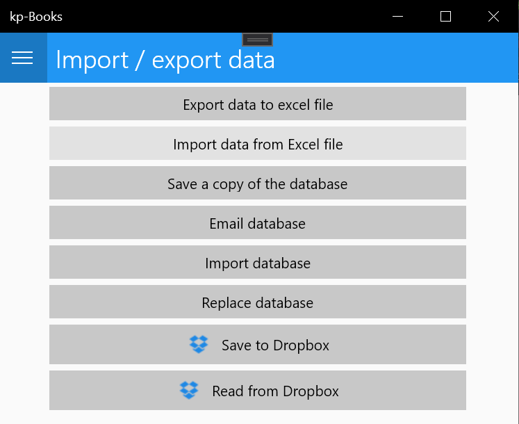

Fill in the sample.xlsx with your data and import the file in kp-Books.
Select “Import / export data”
and then “Import data from Excel file”
On next screen click “Select data file” and use the dialog box to select the file that contains your data. Right after selecting the file, import begins and finally the following message appears

The contents of the file should be formated as in the following picture